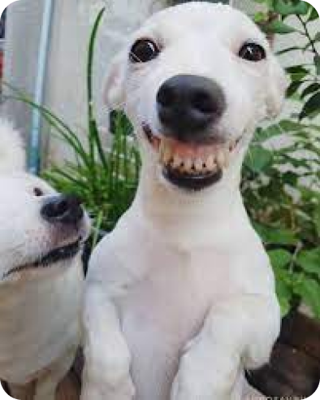

Navegue pelo nosso site e encontre dicas úteis, conselhos de especialistas e recursos para garantir que a sua jornada como tutor de um pet adotado seja repleta de alegria e sucesso. juntos, vamos proporcionar o melhor lar para o seu companheiro.

Preocupados com a quantidade de animaizinhos nas ruas, e a falta de conhecimento dos cuidadores, resolvemos criar esse site para facilitar o acesso ao conhecimento.
